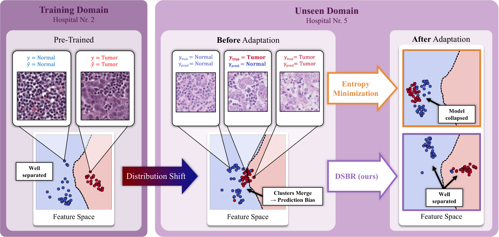
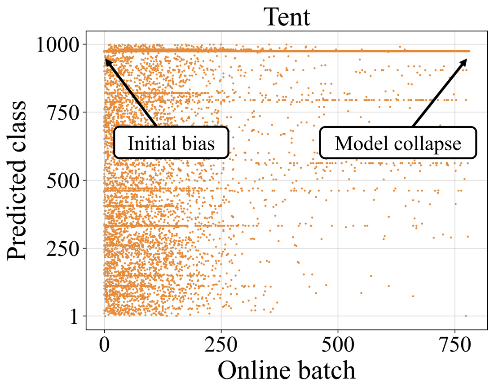
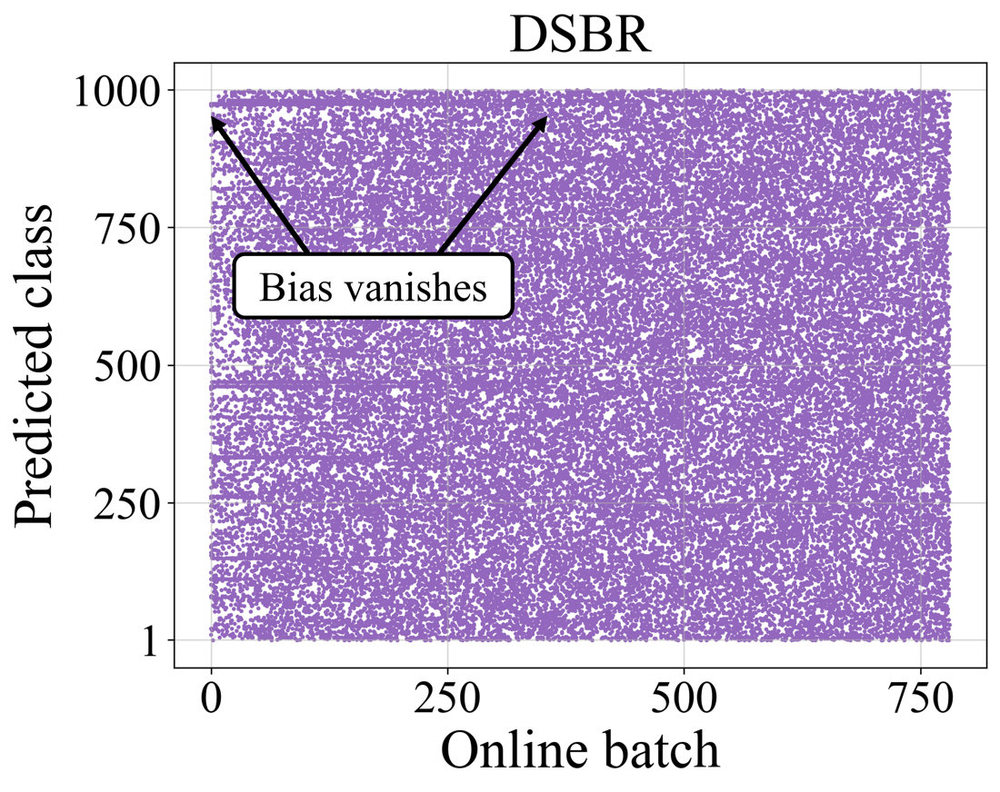

Abstract
Entropy minimization (EM) is the dominant objective for test-time adaptation, yet its failure mode, model collapse, remains poorly understood. In this work, we show that distribution shifts can cause feature clusters corresponding to distinct classes in the model’s representation space to merge, while the decision boundary remains fixed. This induces a systematic skew in the predicted class distribution, referred to as prediction bias. Prediction bias refers to a shift in the predicted class distribution, with some classes overrepresented and others suppressed. We show that entropy minimization amplifies this prediction bias by tightening the existing clusters, reinforcing the incorrect groupings until all predictions collapse to a trivial solution. Next, to demonstrate the significance of prediction bias and mitigate it, we further propose Distribution Shift Bias Reduction (DSBR), a bias-correcting objective that specifically targets this failure mode by equalizing the contribution of each predicted class to the unsupervised entropy minimization loss. To study this failure mode, we design suitable adaptation settings using four medical-imaging datasets and additionally evaluate on ImageNet-C. We find that DSBR consistently stabilizes test-time adaptation, prevents model collapse, and matches or outperforms state-of-the-art methods. Moreover, DSBR operates solely at test-time.
Method
DSBR reweights the entropy loss so that every predicted class contributes equally. Samples in overrepresented clusters count for less, and samples in underrepresented clusters count for more, which works against cluster merging. It needs no sample filtering or domain-specific augmentations, and its only hyperparameter is the EMA decay \(\alpha\).
At each step, DSBR updates an exponential moving average of the predicted class frequencies, starting from \(\hat{P}_{0}^{(k)} = 1/K\):
Here \(B^{(k)}_{t}\) is the number of samples in the batch predicted as class \(k\). The DSBR loss over batch \(\mathcal{B}_{t}\) then weights each sample’s entropy loss \(l(X)\) by the inverse of its predicted class frequency:
Using DSBR with minimal edits
DSBR is a small change to entropy minimization (EM; Wang et al., ICLR 2021). It needs no extra forward pass, sample filter or augmentation, because it only changes how the per-sample entropies are averaged. Only the methods that change are shown; the rest of the class stays the same.
class EM(Algorithm):
def __init__(self, input_shape, num_classes, num_domains, hparams, algorithm):
super().__init__(input_shape, num_classes, num_domains, hparams)
self.base_optimizer = hparams.get('base_optimizer', 'SGD')
self.use_sam = hparams.get('use_sam', False) # Control SAM usage via hparams
self.use_come = hparams.get('use_come', False) # Control COME usage via hparams
if self.use_come:
self.entropy_fn = entropy_of_opinion
else:
self.entropy_fn = softmax_entropy
self.num_classes = num_classes
self.model, self.optimizer = self.configure_model_optimizer(algorithm, lr=hparams['lr'])
self.steps = hparams.get('num_update_steps', 1)
assert self.steps > 0, "requires >= 1 step(s) to forward and update"
self.episodic = False
# note: if the model is never reset, like for continual adaptation,
# then skipping the state copy would save memory
self.model_state, self.optimizer_state = \
copy_model_and_optimizer(self.model, self.optimizer)
@torch.enable_grad() # ensure grads in possible no grad context for testing
def forward_and_adapt(self, x, model, optimizer):
"""Forward and adapt model on batch of data.
Measure entropy of the model prediction, take gradients, and update params.
"""
# forward
optimizer.zero_grad()
outputs = model(x)
# adapt
entropys = self.entropy_fn(outputs)
loss = entropys.mean(0)
loss.backward()
optimizer.step()
return outputs
def reset(self):
if self.model_state is None or self.optimizer_state is None:
raise Exception("cannot reset without saved model/optimizer state")
load_model_and_optimizer(self.model, self.optimizer,
self.model_state, self.optimizer_state)
class DSBR(Algorithm):
def __init__(self, input_shape, num_classes, num_domains, hparams, algorithm):
super().__init__(input_shape, num_classes, num_domains, hparams)
self.base_optimizer = hparams.get('base_optimizer', 'Adam')
self.use_sam = False
self.use_come = hparams.get('use_come', False) # Control COME usage via hparams
if self.use_come:
self.entropy_fn = entropy_of_opinion
else:
self.entropy_fn = softmax_entropy
self.num_classes = num_classes
self.model, self.optimizer = self.configure_model_optimizer(algorithm, lr=hparams['lr'])
self.steps = hparams.get('num_update_steps', 1)
assert self.steps > 0, "requires >= 1 step(s) to forward and update"
self.episodic = False
# note: if the model is never reset, like for continual adaptation,
# then skipping the state copy would save memory
self.model_state, self.optimizer_state = \
copy_model_and_optimizer(self.model, self.optimizer)
self.cluster_distribution = torch.ones(num_classes) / num_classes
self.ema_alpha = hparams.get('ema_alpha', 0.9)
@torch.enable_grad() # ensure grads in possible no grad context for testing
def forward_and_adapt(self, x, model, optimizer):
"""Forward and adapt model on batch of data.
Measure entropy of the model prediction, take gradients, and update params.
"""
# forward
optimizer.zero_grad()
outputs = model(x)
# adapt
entropys = self.entropy_fn(outputs)
cluster_ids = outputs.argmax(dim=1)
local_cluster_distribution = torch.bincount(cluster_ids, minlength=self.num_classes) / len(cluster_ids)
self.cluster_distribution = self.ema_alpha * self.cluster_distribution.to(entropys.device) + (1 - self.ema_alpha) * local_cluster_distribution
entropys = entropys / (self.num_classes * self.cluster_distribution[cluster_ids])
loss = entropys.mean(0)
loss.backward()
optimizer.step()
return outputs
def reset(self):
if self.model_state is None or self.optimizer_state is None:
raise Exception("cannot reset without saved model/optimizer state")
load_model_and_optimizer(self.model, self.optimizer,
self.model_state, self.optimizer_state)
self.cluster_distribution = torch.ones_like(self.cluster_distribution) / len(self.cluster_distribution)
Results
Collapse on ImageNet-C


Predicted classes over one ImageNet-C Fog episode (severity 5). Both methods start with the same bias. Tent amplifies it until the model collapses, while DSBR dampens it until it vanishes by about batch 400.
Medical imaging benchmarks
Balanced accuracy (%), averaged over all source–target configurations. Δ Avg. is the average improvement over the non-adapted model. The best result in each column is in bold.
| Method | Histopantum | MammoBench | WILDSCamelyon | GliomaMRI | Δ Avg. |
|---|---|---|---|---|---|
| ResNet | |||||
| No adaptation | 86.6 ± 0.0 | 59.4 ± 0.0 | 87.4 ± 0.0 | 42.9 ± 0.0 | 0.0 ± 0.0 |
| Tent | 88.5 ± 0.1 | 58.8 ± 0.1 | 87.9 ± 0.0 | 44.3 ± 1.3 | +0.8 ± 0.4 |
| SAR | 86.6 ± 0.0 | 59.4 ± 0.0 | 87.4 ± 0.0 | 44.2 ± 1.4 | +0.3 ± 0.4 |
| ROID | 87.2 ± 1.7 | 56.6 ± 0.5 | 94.8 ± 0.6 | 44.4 ± 1.3* | +1.7 ± 1.0 |
| DeYO | 76.1 ± 2.8 | 60.9 ± 0.2 | 92.7 ± 0.5 | n/a† | −0.9 ± 0.9 |
| DSBR (ours) | 89.9 ± 0.4 | 62.7 ± 0.5 | 96.5 ± 0.1 | 44.0 ± 1.1 | +4.2 ± 0.5 |
| ViT | |||||
| No adaptation | 87.1 ± 0.0 | 54.4 ± 0.0 | 87.0 ± 0.0 | 37.2 ± 0.0 | 0.0 ± 0.0 |
| Tent | 87.4 ± 0.0 | 54.4 ± 0.0 | 87.4 ± 0.1 | 37.4 ± 0.2 | +0.2 ± 0.1 |
| SAR | 87.1 ± 0.0 | 54.4 ± 0.0 | 87.0 ± 0.0 | 37.2 ± 0.0 | 0.0 ± 0.0 |
| ROID | 88.0 ± 0.3 | 54.5 ± 0.8 | 94.3 ± 0.2 | 38.2 ± 5.0* | +2.3 ± 1.6 |
| DeYO | 87.9 ± 0.2 | 55.2 ± 0.1 | 93.5 ± 0.3 | n/a† | +2.0 ± 0.2 |
| DSBR (ours) | 88.8 ± 0.4 | 55.2 ± 0.5 | 95.6 ± 0.3 | 36.5 ± 0.9 | +2.6 ± 0.5 |
* Consistency component disabled because it relies on 2D augmentations. † Not available because the method relies on 2D augmentations.
ImageNet-C
Accuracy (%) at severity 5 in the default setting and three wild settings. The best result in each column is in bold.
| Method | Default | Label shifts | Mixed corruptions | Batch size 1 | Δ Avg. |
|---|---|---|---|---|---|
| ResNet50-GN | |||||
| No adaptation | 31.4 ± 0.0 | 31.4 ± 0.0 | 31.4 ± 0.0 | 31.4 ± 0.0 | 0.0 ± 0.0 |
| Tent | 32.2 ± 0.3 | 30.3 ± 0.7 | 32.1 ± 1.7 | 30.8 ± 0.3 | 0.0 ± 0.7 |
| SAR | 36.7 ± 3.0 | 37.8 ± 0.5 | 38.5 ± 0.1 | 35.8 ± 0.3 | +5.8 ± 1.0 |
| ROID | 46.8 ± 0.1 | 2.7 ± 0.1 | 37.6 ± 0.1 | 0.1 ± 0.0 | −9.6 ± 0.1 |
| DeYO | 44.1 ± 4.9 | 44.1 ± 5.6 | 39.4 ± 1.1 | 43.9 ± 4.3 | +11.4 ± 4.0 |
| DSBR (α = 0.99) | 49.7 ± 0.1 | 46.8 ± 0.2 | 43.0 ± 0.2 | 41.6 ± 0.1 | +13.9 ± 0.1 |
| DSBR (α = 0.9) | 48.8 ± 0.1 | 38.2 ± 0.3 | 41.4 ± 0.2 | 38.3 ± 0.1 | +10.2 ± 0.2 |
| ViT-B/16 | |||||
| No adaptation | 39.8 ± 0.0 | 39.8 ± 0.0 | 39.8 ± 0.0 | 39.8 ± 0.0 | 0.0 ± 0.0 |
| Tent | 51.9 ± 0.5 | 53.0 ± 0.3 | 33.1 ± 4.5 | 51.7 ± 0.3 | +7.6 ± 1.4 |
| SAR | 54.2 ± 0.3 | 56.2 ± 0.1 | 53.7 ± 0.2 | 56.2 ± 0.3 | +15.3 ± 0.2 |
| ROID | 64.6 ± 0.1 | 86.4 ± 4.9 | 57.2 ± 0.1 | 0.1 ± 0.0 | +12.2 ± 1.3 |
| DeYO | 61.8 ± 2.0 | 62.4 ± 1.1 | 53.6 ± 0.8 | 61.8 ± 0.9 | +20.1 ± 1.2 |
| DSBR (α = 0.99) | 64.9 ± 0.3 | 56.2 ± 0.2 | 60.9 ± 0.7 | 58.2 ± 0.1 | +20.2 ± 0.3 |
| DSBR (α = 0.9) | 64.4 ± 0.2 | 42.2 ± 0.2 | 59.5 ± 1.0 | 55.9 ± 0.4 | +15.7 ± 0.5 |
Citation
@inproceedings{nielen2026entropy,
title = {Entropy Minimization without Model Collapse: Mitigating Prediction Bias in Medical Imaging},
author = {Nielen, Tim and Ambekar, Sameer and Kiechle, Johannes and Lang, Daniel M. and Schnabel, Julia A.},
booktitle = {Advances in Neural Information Processing Systems},
year = {2026},
eprint = {2606.02339},
archivePrefix = {arXiv},
primaryClass = {cs.LG}
}
Acknowledgments
This work is supported by DAAD programme Konrad Zuse Schools of Excellence in Artificial Intelligence, Munich Center for Machine Learning, both sponsored by the Federal Ministry of Research, Technology, Bavaria California Technology Center (BaCaTeC) under BaCaTeC-Förderprojekt Nr. 20 [2026-1], Deutsche Forschungsgemeinschaft (DFG, German Research Foundation) – 515279324 / SPP 2177, and the German Federal Ministry of Research, Technology and Space (DECIPHER-M, 01KD2420G). DML and JAS received funding from HELMHOLTZ IMAGING, a platform of the Helmholtz Information and Data Science Incubator.